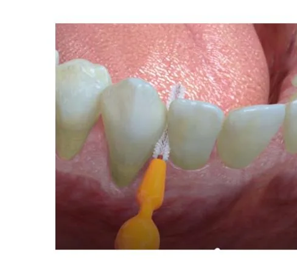
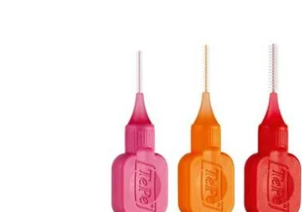

نسخه استخراجشده؛ ترجمه یا تأیید علمی انجام نشده است. وضعیت: captured
سه واقعیت که با هم، این بخش را به قلب کنترل پلاک تبدیل میکنند:

مسواک حدود ۴۰ درصد سطوح دندانی را پاک نمیکند.
سطوح پاکنشده دقیقاً همان نواحی بیندندانی هستند.
بیماری پریودنتال و پوسیدگی، هر دو بیش از هر جای دیگر از همین نواحی آغاز میشوند.
🔑 نتیجه: آموزش مسواک زدن بدون آموزش تمیزکاری بیندندانی، آموزشی ناقص است — نه یک توصیه اختیاری اضافه.
| وضعیت فضا | ابزار ارجح |
|---|---|
| پاپیلا کامل، تماسهای تنگ | نخ دندان |
| فضای باز، پاپیلای تحلیلرفته | برس بیندندانی |
| فضای بسیار باز، فورکیشن باز | برس بیندندانی بزرگتر، تافتبرس |
| ارتودنسی، بریج، ایمپلنت | سوپرفلاس، برس بیندندانی، واترجت کمکی |
🔑 هرجا فضا اجازه بدهد، برس بیندندانی استاندارد طلایی است. شواهد بهنفع آن در کاهش پلاک و التهاب، بهروشنی از شواهد نخ دندان قویتر است.

| نخ دندان | برس بیندندانی | |
|---|---|---|
| قدرت شواهد | ضعیفتر و ناهمگون | 🟢 قویتر و پایدارتر |
| اندیکاسیون | تماسهای تنگ، پاپیلای کامل | هر فضایی که ابزار در آن جا شود |
| مهارت لازم | بالا — بسیاری اشتباه استفاده میکنند | کمتر — پذیرش بیمار بهتر |
| نکته حیاتی | باید به شکل C دور دندان بپیچد و زیر لثه برود | انتخاب اندازه صحیح تعیینکننده است |
نخ دندان: فرو کردن عمودی و ناگهانی که پاپیلا را زخم میکند، بهجای لغزاندن ملایم و پیچیدن به شکل C روی هر دو سطح مجاور.
برس بیندندانی: استفاده از اندازه خیلی کوچک که سطوح را لمس نمیکند، یا خیلی بزرگ که بافت را زخم میکند و بیمار را از ادامه دادن منصرف میکند.
| میتواند | نمیتواند |
|---|---|
| پسمانده غذا و بیوفیلم سست را بشوید | بیوفیلم چسبیده و بالغ را بهطور مکانیکی بردارد |
| التهاب و BOP را کاهش دهد | جایگزین برس بیندندانی یا نخ شود |
| در ارتودنسی، بریج و ایمپلنت بسیار مفید باشد | بهتنهایی کنترل پلاک کافی فراهم کند |
🔑 واترجت مکمل است، نه جایگزین. بیشترین سود آن برای بیمارانی است که دسترسی مکانیکی به نواحی خاصی ندارند — زیر بریج، اطراف براکت، اطراف ایمپلنت.
شواهد نشان میدهد انجام تمیزکاری بیندندانی پیش از مسواک زدن میتواند مفیدتر باشد:
پلاک بیندندانی پیش از ورود خمیردندان برداشته میشود.
فلوراید خمیردندان سپس به سطوح تازه تمیزشده میرسد و بهتر باقی میماند.
⚠️ اما مهمتر از ترتیب، انجام دادن آن است. اگر بیمار فقط با یک ترتیب خاص پایبند میماند، همان را تثبیت کن.
ابزار را در دهان خود بیمار و جلوی آینه نشان بده و از او بخواه در همان جلسه تمرین کند. توصیه شفاهی بهتنهایی، تغییر رفتار ایجاد نمیکند.
⚠️ اشتباه رایج ۱: هرجا فضا اجازه دهد، برس بیندندانی بر نخ دندان ارجح است.
⚠️ اشتباه رایج ۲: واترجت مکمل است، نه جایگزین.
⚠️ اشتباه رایج ۳: نخ باید به شکل C دور دندان بپیچد، نه اینکه فقط عمودی فرو رود.
نوع سؤال: ساخت کلمه · 4 خانه
حروف منبع: م · ت · ا · س